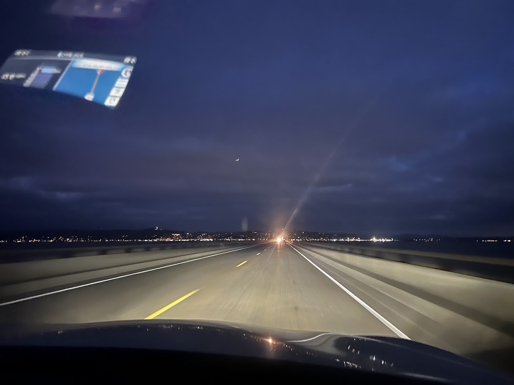
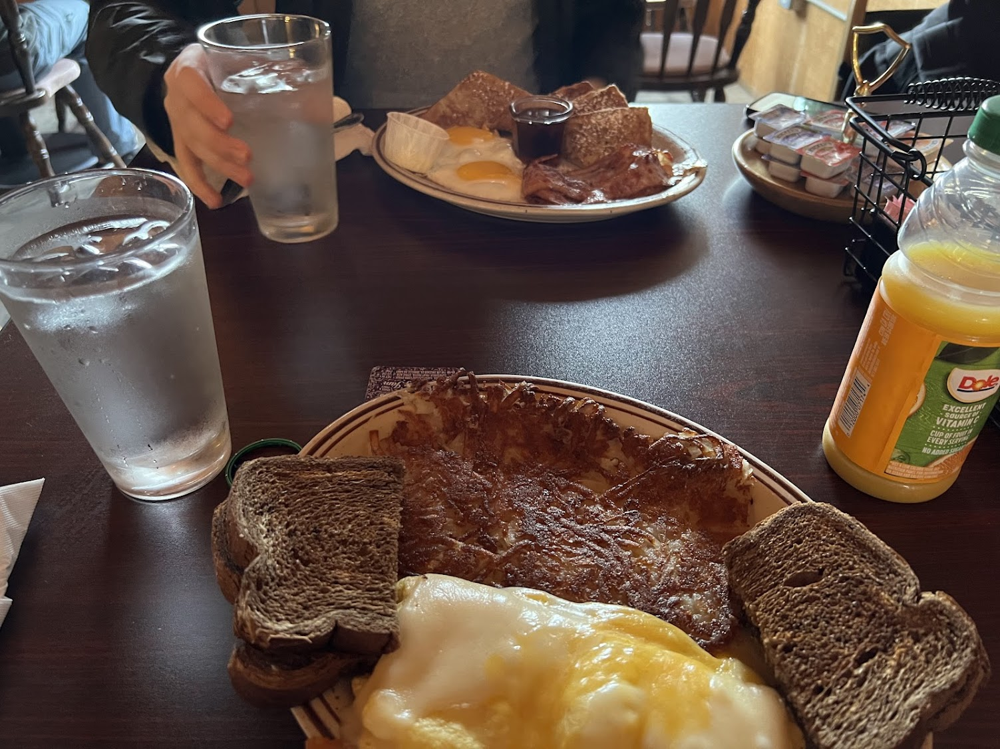
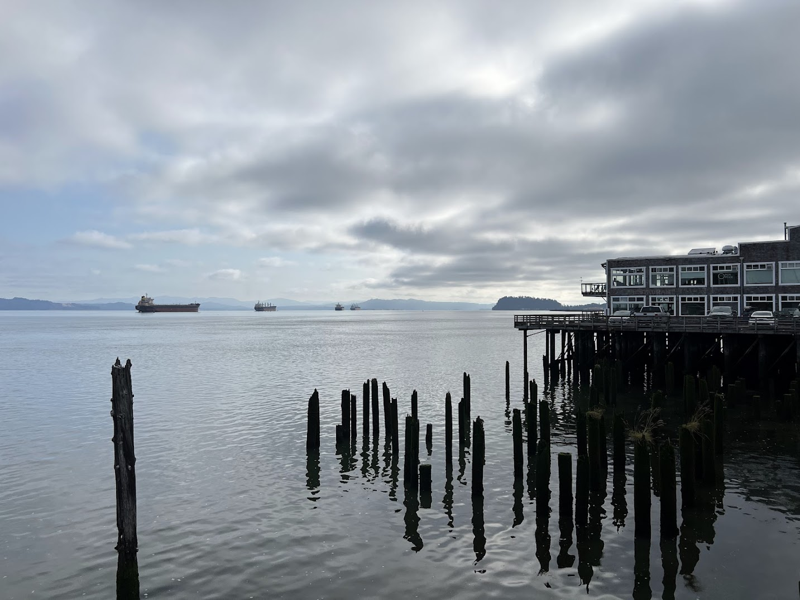
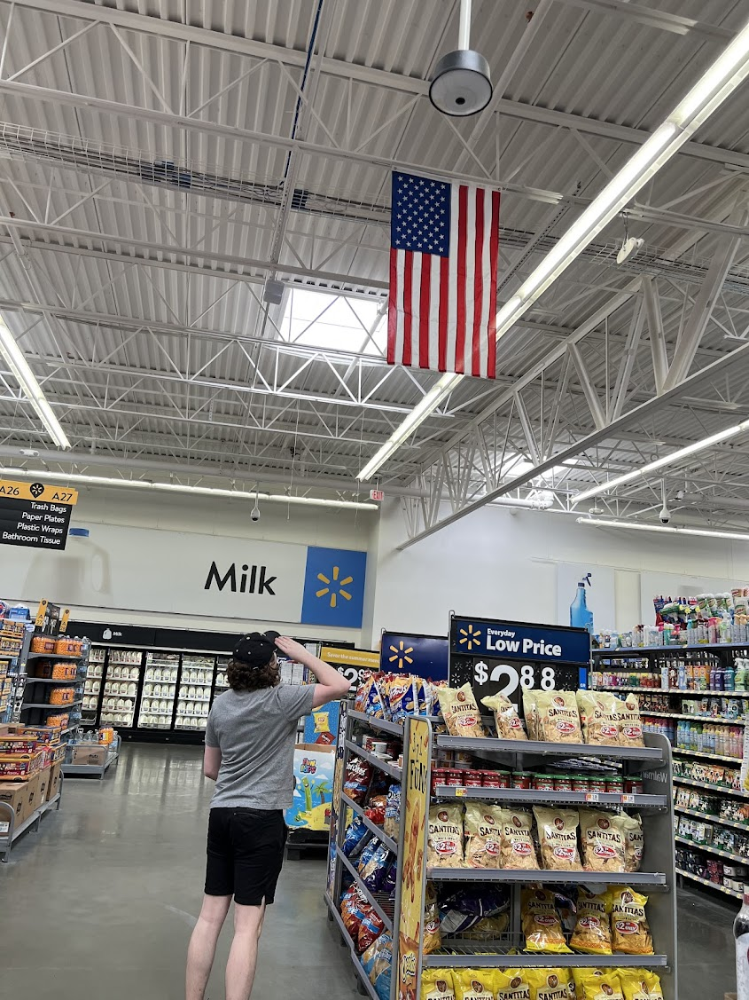
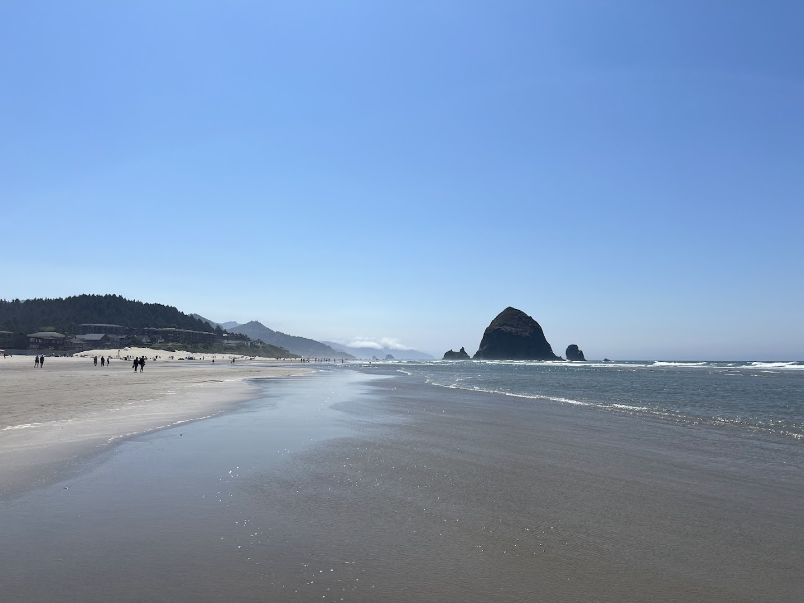
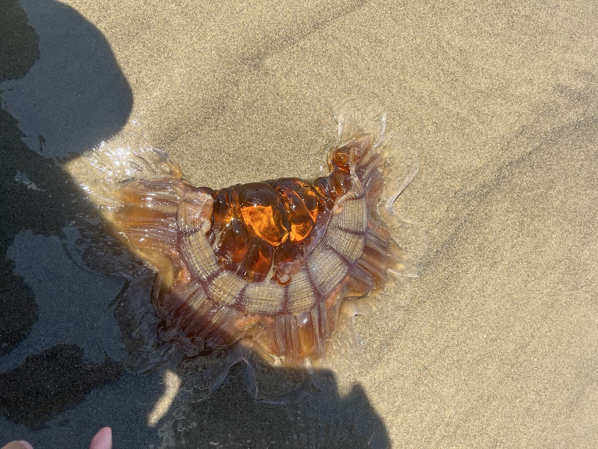
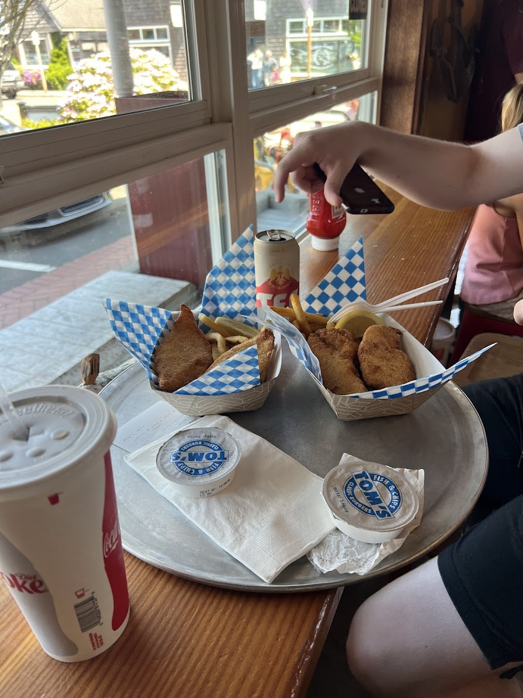
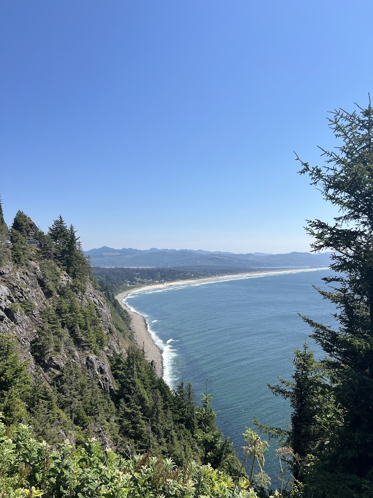

The Pacific Coast Highway Road Trip
Published on: August 23, 2024
Table of Contents
Food Spots Along the Way
- Riverwalk Restaurant - Astoria, Oregon
- Tom's Fish and Chips - Cannon Beach, Oregon
The Adventure Begins
This trip was chaotic from the start. My weekend was already packed with a camping trip, and I barely had time to breathe before catching a flight early Tuesday morning. The night before my flight, while shopping at Lululemon in Edmonton, I accidentally left my wallet in one of the store's stalls. By the time I realized this, the store had already closed.
Facing a morning flight to Vancouver with no ID, I arrived at the airport early, hoping for the best. After ALOT of back and forth between the RCMP, WestJet, and airport authorities, I finally received approval from higher-ups to board without identification. Probably the most stressful check-in I’ve ever had at an airport.
Washington
After landing in Vancouver, my friend Tyler picked me up, and our first stop was ICBC to get a temporary license that looked more like scrap paper rather than a legal document... I remember joking that if we got pulled over in the U.S., there was no way an American cop would believe it was real (turns out we would get pulled over twice). After crossing the border (and a lengthy wait), we zipped through Washington state. While we didn't stop in Seattle, we did notice two distinctly American things: the surprisingly affordable Costco prices and the numerous people in military uniforms, likely due to the nearby military base in Tacoma. Once we had everything sorted, we set off on the Pacific Coast Highway, heading south toward the U.S.
Oregon
Astoria
By Tuesday night, we reached the charming town of Astoria, Oregon. The first thing we saw as we drove into Astoria was the Astoria-Megler Bridge stretching across the Columbia River. Seeing it lit up at night was something else.

We crashed at our sketchy AirBnB (we shared a bed in a single room with a veryyyy spacious washroom) and went to sleep immediately.
Riverwalk Restaurant
The next morning our first meal stop was for breakfast at Riverwalk Restaurant in Astoria. I opted for a meal of hash, eggs, and bread, with fresh juice, while Tyler had the same thing but with bacon (haram, astaghfirullah smh). After eating, we took a walk around the pier. Astoria had this quiet, sleepy coastal town vibe that I really liked. The air smelled fresh, with that crisp scent of salt and seaweed.


The next morning, we made a quick stop at Lewis and Clark National Park, where we checked out Fort Clatsop, a reconstructed version of the fort Lewis and Clark built when they first reached the Pacific. I definitely wouldn’t survive in a wooden fort with no WiFi and no TikTok and no Instagram. Next we stopped at a Walmart in Warrenton, Oregon. I don’t know why (probably capitalism), but American Walmarts in the middle of nowhere are way more exciting than Canadian ones in big cities. The sheer variety of stuff on the shelves was wild.

Cannon Beach
Cannon Beach was straight out of a postcard. The town itself was quaint, clean, and had that perfect beach town aesthetic. The streets were lined with little shops, art galleries, and cozy cafés, all leading up to a massive stretch of golden sand.

We walked along the beach toward the famous Haystack Rock, but what stood out the most (besides the giant rock itself) was the alarming number of dead jellyfish washed up on shore. We must have passed dozens of them. Some were tiny, while others were massive. At one point, Tyler poked one with a stick, just to see what would happen. Spoiler: nothing happened.

Tom's Fish and Chips
Then we stopped for lunch at Tom's Fish and Chips. I can confidently say it was the best fish and chips I've ever ate. I paired my meal with some iced tea, while Tyler tried a local beer that didn't quite meet his expectations. The fish was perfectly crispy, the fries were thick and golden, and the (probably homemade) tartar sauce was amazing.

Neahkahnie Viewpoint
Continuing south along the coast, we stopped at the breathtaking Neahkahnie Viewpoint. This was hands down the most beautiful coastal view we had seen so far. From the edge of the cliff, we could see the entire coastline stretching for miles, the waves crashing against the rocks below. It was the kind of view that made you stop and just appreciate how insane nature is.This view helped cement our growing opinion that Oregon's natural beauty was severely underrated, especially compared to Washington (though we admittedly saw very little of Washington state).

California
[Content to be added]